This project is a fan translation file of the Super Famicom video game
Dokapon 3-2-1: Arashi o Yobu Yuujou (ドカポン3・2・1 〜嵐を呼ぶ友情〜) released in 1994.
Dokapon 3-2-1 is the second Dokapon game for the Super Famicom. Like its predecessor, it follows a group of ragtag RPG heroes across a board game-like map as they attempt to outmaneuver each other and be the first to save the kingdom. Characters move around determinant on dice rolls and can acquire items and treasure depending on where they land. They can also get into fights with random monsters to gain experience points and increase their stats, though being defeated will cause them to lose a turn.
A remake for the Wii and PS2 was released in 2008.
The English patch file (v1.4)
January 2023 Update - v1.4
Last patch file (v1.4) is available here : Dokapon 3-2-1 English v1.4.zip
Also available on romhacking.net https://www.romhacking.net/translations/5561/
New wiki: https://github.com/Krokodyl/dokapon-english/wiki
Previous patches
Patch v1.3 : Dokapon 3-2-1 English v1.3.zip
Patch v1.2 : Dokapon 3-2-1 English v1.2.zip
It applies to the following ROM :
File: Dokapon 3-2-1 - Arashi o Yobu Yuujou (Japan)
No-Intro: Super Nintendo Entertainment System (v. 20180813-062835)
ROM SHA-1: 9343CA8D3161DEA847E0369A4A91CD7F8DC2D3AE
ROM CRC32: FC353400
Japanese rom size : 1.5 Mb (1 572 864 bytes)
Patched rom size : 2.0 Mb (2 097 152 bytes)
Update v1.3 (Translated sprites & backgrounds)
| Japanese | English |
|---|---|
| 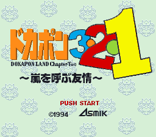 |  |
| 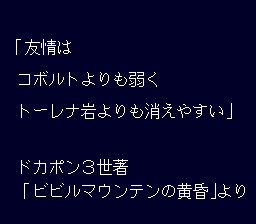 | |
| 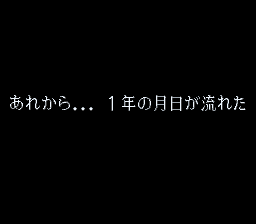 | |
| 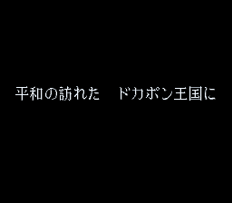 | 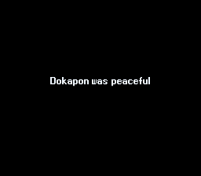 |
| 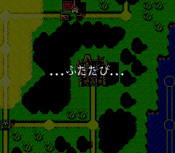 | 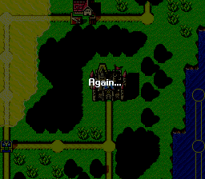 |
| 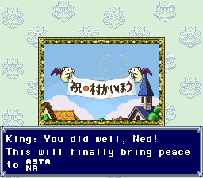 | 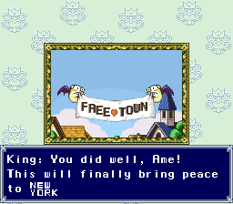 |
| 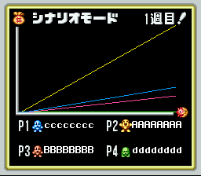 | 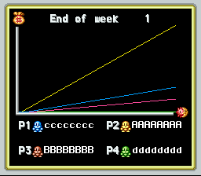 |
| 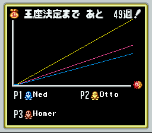 | 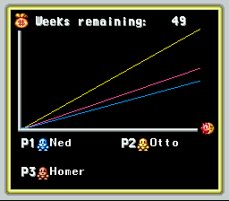 |
| 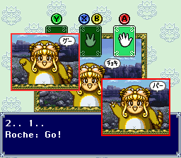 | |
| 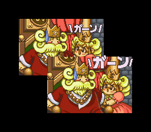 | 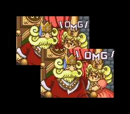 |
| 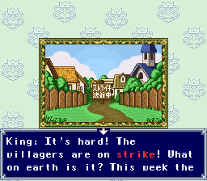 | 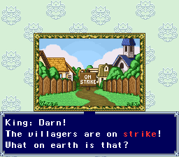 |
| 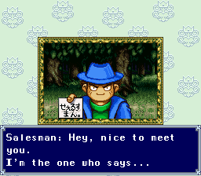 | 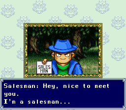 |
| 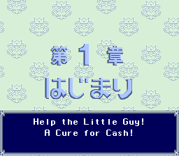 | 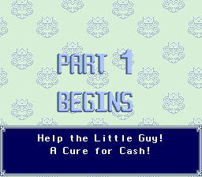 |
| 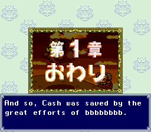 | 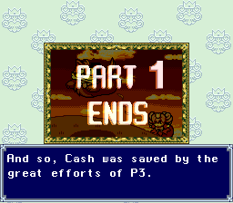 |
| 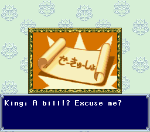 | 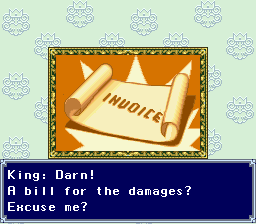 |
| 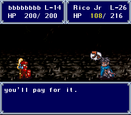 | 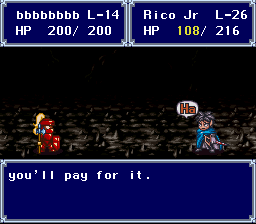 |
| 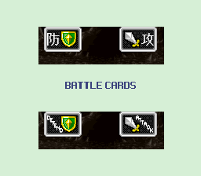 | |
| 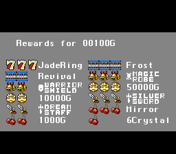 | |
| 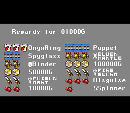 | |
| 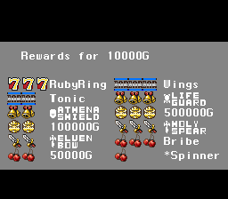 | |
| 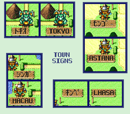 |
Translations
Many translations are inspired by the Wii remake from 2008. Such as the character names, the items and magic names, the chapter titles, etc.
The town names, unlike in the Wii version, are actual city names. But because the city names in Japanese fit on 4 characters, I added two-letter characters in order to be able to write 8-letter city names. The city names that were longer than 8 letters are replaced with shorter names from other actual cities of the same area.
The two-letter characters are also used for some of the equipment names but due to the way the characters are encoded in the game, there’s only so many that can be used.
| Japanese | English |
|---|---|
| 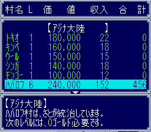 | 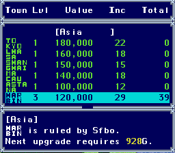 |
| 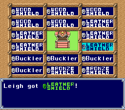 |
Know bugs / Improvements
- Yes/No questions are sometimes hidden under the Yes/No menu
Fixes
v1.4 (January 2023)
- New wiki for the translated game: https://github.com/Krokodyl/dokapon-english/wiki/
- Better compression algorithm
- Translations rewritten (about 200)
- Renamed Magic (to match the visuals): Blaze, Shock, Frost, Rust, Berserk, Seize, Bounce, Mirror
- Renamed Items: Detector
- Fixed many menus where Yes/No was overlapping text
- Updated fonts
- Fixed “ghost” values next to the continent names in the town list
- Side-by-side comparison shows that the long AI decision-making is inherent to the game. (The worst situation is an AI using spinners when Asia, Europe, NA, Africa and Greenland are all open) This is due to the path finding algorithm.
v1.3 (March 2022)
- Improvement : Translated the quote after the logo
- Improvement : Translated the introduction texts
- Improvement : Translated the town names on the map
- Fix : Move the AI menu to the left to show full words instead of Wea, Nor, Har
- Fix : When using Look on a square with 2 or more characters, only shows 1st char.
- Changes :
- Dakar -> Bamako
- Bamako -> Niamey
- Ciuaba -> Manaus
- Lynton -> Auckland
- Weak AI -> Easy AI
v1.2 (February 2022)
- Fixed the ranking table for 3 and 4 players
- In the menus, differentiate Towns and Castles
- Fixed menu size when talking with Risque
- Bug on menu after a player escapes another player
- Text too long when using a revival after a loss
- Text correction in the casino.
- Translation for MOSK8: Sap (Gremlin skill that reduces the target’s magic count)
- Translation for MOSK2: Steal (Gnome skill that takes 25% of the target’s gold)
- Translation for Item8: Doka.Orb
- Translation for MOSK11: Twister (かまいたち Kamaitachi, a wind yokai)
v1.1 (April 2021)
- Bad translation: “Who will play together”
- Typo: “Knifes”
- Bug on the Kill Race starting level
- Menu after a player kill is not wide enough
- Bug on the rename screen (after a player kill)
Screenshots
| Japanese | English |
|---|---|
| 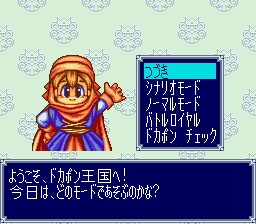 | 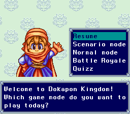 |
| 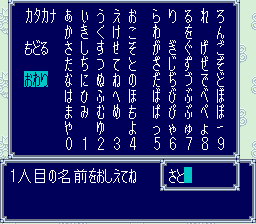 | 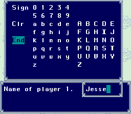 |
| 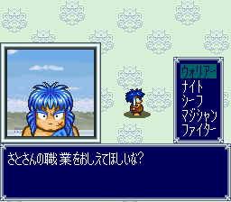 | 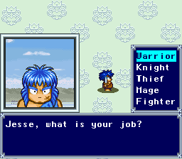 |
| 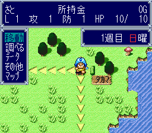 | 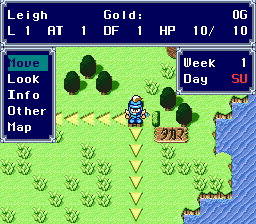 |
| 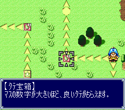 | 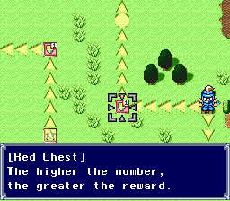 |
| 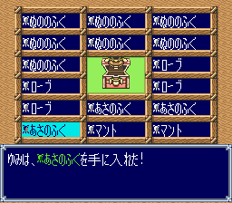 | 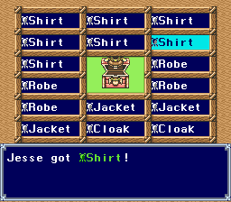 |
| 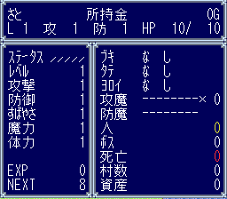 | 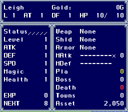 |
Tips and Hints
Story mode
See wiki: https://github.com/Krokodyl/dokapon-english/wiki/Game-modes#story-mode
Single player
The game can be played solo against two or three CPUs.
You will need to have two joypads plugged in: players 1 and 3 use Joypad-1, players 2 and 4 use Joypad-2.
I think the game supports the multitap as well.
Locations
| Special location | Access |
|---|---|
| Spring Cave | Asia |
| Casino Cave | Europe |
| Lava Cave | North America |
| Lost Forest | North America South America |
| Freaky Mountain | South America |
| Sea Temple | South America |
| Ruins | Africa |
| Underground Passage | Africa Australia |
| Rabble Tower | Australia |
| Sky Palace | Freaky Mountain (requires Wings) |
| Hell Devil’s Castle |
Last chapter in scenario mode |
Special chests
See wiki: https://github.com/Krokodyl/dokapon-english/wiki/Spaces#special-chests
Dokapon Ring
Taking the three rings (Onyx Ring, Ruby Ring and Jade Ring) to the castle will merge them into one ring (Dokapon Ring). AFAIK, the Dokapon Ring only has the combine effects of the three rings but it only uses one inventory slot.
Sky Palace
Beating Rico Jr. (random spawn in some dungeons, or fixed spawn in story mode) will give you the item [Wings]. Going to the top of the Freaky Mountain (in South America), with the Wings will take you to the Sky Palace. The Sky Palace is a place with many blue, yellow and white chests and one special chest.
Quizz
See wiki: https://github.com/Krokodyl/dokapon-english/wiki/Game-modes#quiz
Hidden message
In the middle of the South Atlantic ocean, there’s a tree on an island. Examine it for the credit roll of the dev team.


Share this post: